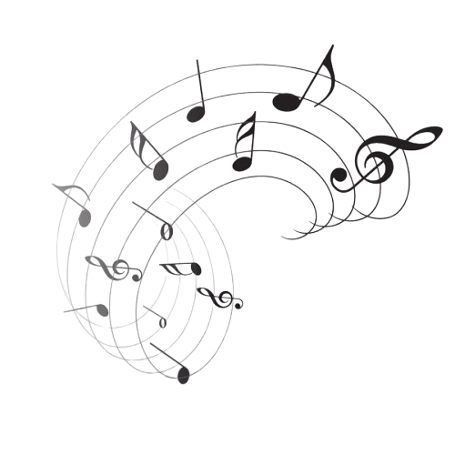
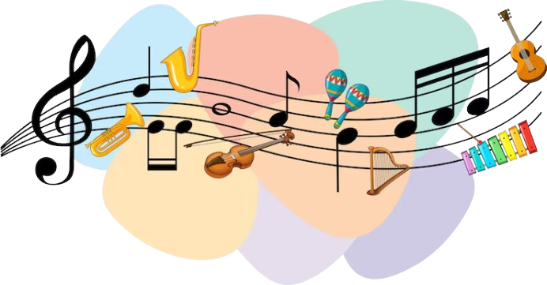
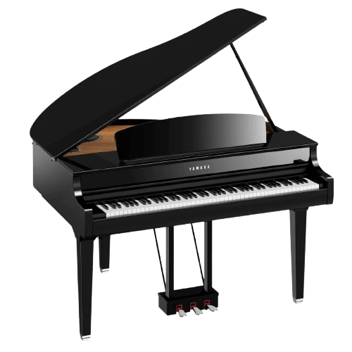
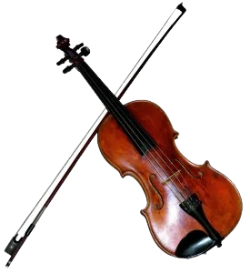
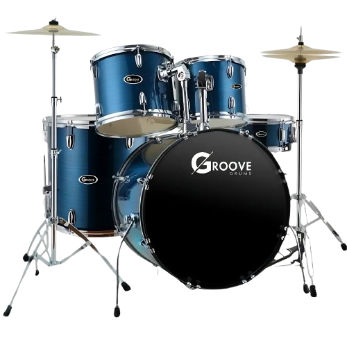
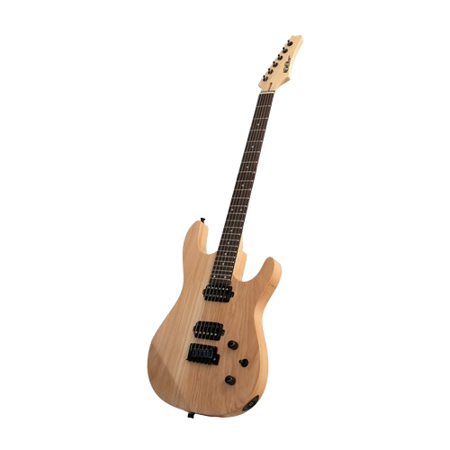
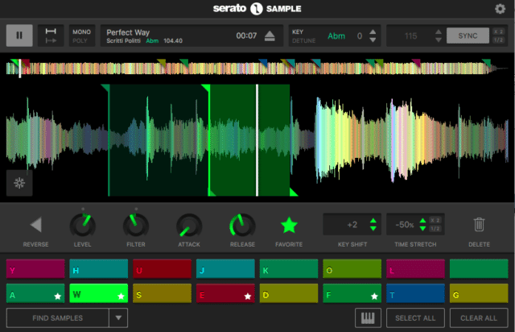
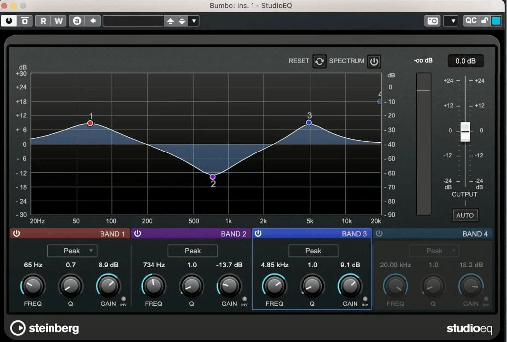

Neste site, irei explicar o que, na minha opinião, que uma música tem ou pode ter para se tornar agradável para os ouvidos. Passaremos por cada camada de uma música, indicando o que elas adicionam ao efeito que a canção nos trará.

A melodia é a junção de notas principais em uma música, sendo, normalmente, a parte mais memorável dela. A melodia define a canção, marcando ela do começo até o fim.
Uma boa música, na minha opinião, deve ter uma melodia agradável, impactante, ou memorável, principalmente no refrão, por isso não gosto de funks e traps e não muito de raps, já que não possuem uma melodia concreta

A melodia é a junção de notas secundárias da música. Normalmente, várias harmonias diferentes se juntam para formar a harmonia completa, como acordes, melodias secundárias, baixo ou notas que marcam o ritmo da música.
A harmonia é tão importante quanto ou até mais importante que a melodia, recheando a música e deixando ela mais completa e agradável. Harmonias bem feitas deixam a música mais original, coisa que não acontece em alguns estilos como samba ou sertanejo, que quando eu ouço, toda música parece igual.

Qualquer instrumento ou ferramenta usada para produzir som na música é parte de um instrumental. O instrumental pode ser parte tanto da melodia quanto da harmonia e se caracteriza por formar vários sons e timbres diferentes para cada música.


Há várias músicas que possuem apenas o instrumental e eu não acho isso nenhum problema. Músicas de jogos são um ótimo exemplo, já que normalmente não possuem nada além de instrumentos e sons criados pelo computador. Um instrumental criativo muda o clima da música e a deixa completamente diferente de como era antes.

Os vocais são muito parecidos com o instrumental, com a única diferença que o único instrumento utilizado é a voz. Normalmente serve para cantar letras e a melodia, mas em muitos casos a harmonia também. A voz de algumas pessoas é incrível, chegando a notas e sons em que a voz normalmente não chegaria.
Assim como com o instrumental, existem músicas feitas apenas com os vocais, conhecidas com acapellas. Os vocais também são usados para beatbox, coros e transmissão de emoções com o uso de diferentes tipos e técnicas vocais. Mesmo assim, os vocais quase sempre são associados à letra, onde os autores podem transmitir diferentes sentimentos. A voz permite a transmissão de vários fatores em uma canção e, por isso, é quase indispensável

Samples são simplesmente faixas de áudio já existentes ou criadas na hora, e sampling é manipulá-lo para criar uma melodia, harmonia, etc. Existem samples muito famosos que se usam em várias músicas. Trechos de bateria, instrumentos e melodias, vozes modificadas, existem milhões de samples para se manipular e criar algo "novo"
Pode se cortar um sample, repetir uma parte específica dele e trocar seu tom para transformar um áudio de 7 segundos em uma música de 2 minutos. Obviamente o sample sozinho não é nada, deve se adicionar outros instrumentos ou vocais em volta para dar uma melhor ambientação. Muitos samples são simplesmente colocados no meio das músicas, como um "Yeah!!" durante uma pausa. Os sasmples não são necessários como outros fatores, mas são uma boa adição que pode fazer grande diferença em uma música

Efeitos, na produção musical, são ferramentas que permitem a modificação do áudio, tornando-o mais agradável. Na grande maioria das vezes, os efeitos são colocados virtualmente, a partir de aplicativos de produção musical. Os efeitos permitem corrigir erros, aperfeiçoar o tom e o timbre e adicionar e retirar sons de um sample.
Efeitos como reverb, que mantém o som por mais tempo até desaparecer, o equalizador, que pode cortar e aumentar partes mais finas ou mais graves do som, o echo, que repete o som diversas vezes cada vez mais baixo, auto-filter, que tira a frequência do som, entre outros, podem ser customizados e estão em qualquer uma das músicas que você ouviu. Eles fazem toda a diferença em uma música, que se sente vazia e mal feita sem eles.
Todos os elementos acima se combinaram em uma obra prima próxima da perfeição. A voz angelical mas ao mesmo tempo intensa de 9lana te leva pro paraíso ao ouví-la!! Um instrumental bonito e criativo que combina perfeitamente com a voz, tanto as guitarras, quanto as baterias quanto a caixa de som ficaram perfeitos. A melodia e a harmonia são lindas, e tem partes da música que me fazem arrepiar, não importa quantas vezes eu ouça!! Adoro a subida de tom e os vocais finais, além de esse efeito de voz chamado growling, que cria um som rasgado e agressivo!! A música traz tanta emoção e é tão incrível, que eu não consigo fazer nada além de admirá-la enquanto ouço.